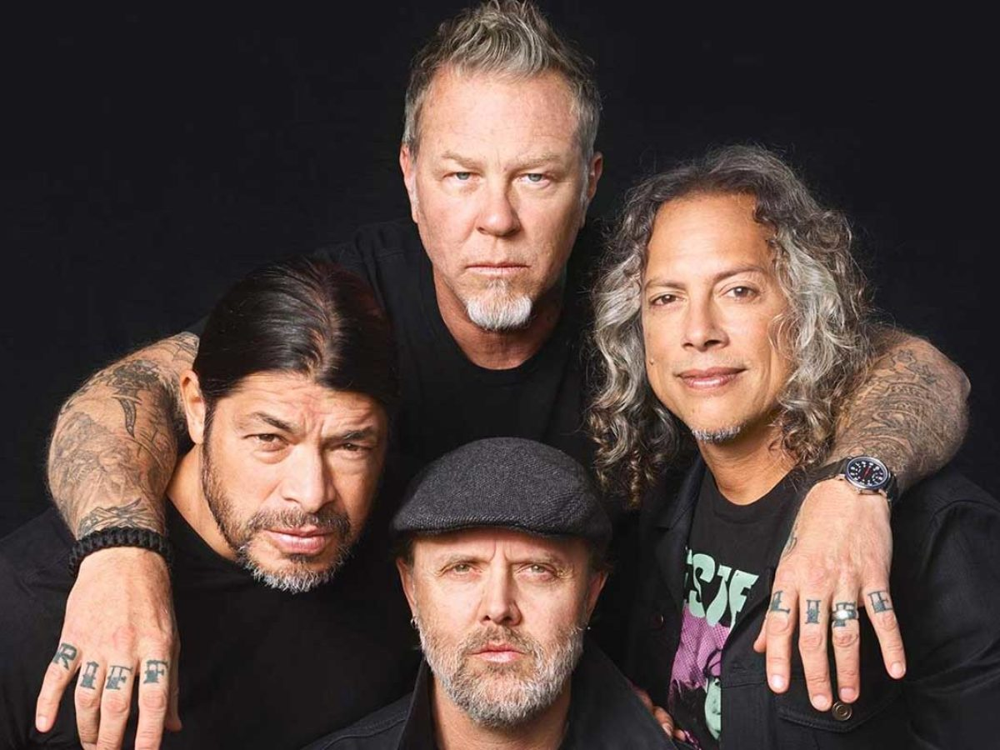

Metallica
Metallica es un grupo estadounidense de thrash metal originado de Los Ángeles, pero con base en San Francisco desde febrero de 1983. Fue fundada en 1981 en Los Ángeles por Lars Ulrich y James Hetfield, a los que se les unirían Dave Mustaine y Ron McGovney. Estos dos músicos fueron después sustituidos por el guitarrista Kirk Hammett y el bajista Cliff Burton respectivamente, Dave Mustaine fue despedido un año después de ingresar en la banda debido a su excesiva adicción al alcohol y su actitud violenta, siendo sustituido por Kirk Hammett (exguitarrista de Exodus). Ron renuncia a la banda debido al mal comportamiento de Dave Mustaine, el cual era violento y problemático cuando estaba bajo el efecto del alcohol. Es entonces, tras contactar con Cliff Burton que la banda se traslada a San Francisco. (Cabe resaltar que Ron sabía que lo iban a despedir y sustituir por Cliff Burton). Por otra parte, el 27 de septiembre de 1986, fue la muerte de Cliff Burton en un accidente de autobús en Suecia, durante una de sus giras, esto provocó la entrada al grupo de Jason Newsted, quien, tras su abandono quince años más tarde, sería sustituido por el bajista actual, Robert Trujillo.
Hasta la fecha, el grupo ha editado 10 álbumes de estudio, siendo el último de estos Hardwired... to Self Destruct el cual fue lanzado mundialmente el 18 de noviembre de 2016. Las ventas totales de Metallica superan los 120 millones, y se les considera parte de los cuatro grandes del thrash metal, junto con Megadeth, Slayer y Anthrax. Además, el grupo ha conseguido numerosos premios musicales, entre los que destacan nueve Grammys, dos premios otorgados por la cadena musical MTV, dos galardones de la Academia de Música Americana (American Music Awards) y dos premios de la revista Billboard, además de pertenecer desde el año 2009 al Salón de la fama del Rock y poseer una estrella en el Paseo de la Fama de la revista Kerrang!